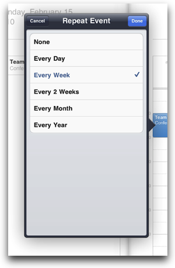

A Popover is used to manage the presentation of content in a popover.
A popover is created using the Titanium.UI.iPad.createPopover method.
Popovers are used to present information temporarily, but in a way that does not take over the entire screen in the way that a modal view does. The popover content is layered on top of the existing content in a special type of window. The popover remains visible until the user taps outside of the popover window or it is explicitly dismissed.

In this example, we create a simple popover and position it near the button.
var popover = Ti.UI.iPad.createPopover({ height: 100, width: 100 });
popover.add(view);
popover.show({ view: button });
In this example, we create a popover with a title and right navigation button.
var popover = Ti.UI.iPad.createPopover({
width: 250,
height: 100,
title: 'Yo Yo',
rightNavButton: button
});
| Name | Type | Summary |
|---|---|---|
| anchorPoint | Point | Coordinate of the view about which to pivot an animation. |
| animatedCenterPoint | Point | Current position of the view during an animation. |
| arrowDirection | Number | Indicates the arrow direction of the popover. |
| backgroundColor | String | Background color of the view, as a color name or hex triplet. |
| backgroundDisabledColor | String | Disabled background color of the view, as a color name or hex triplet. |
| backgroundDisabledImage | String | Disabled background image for the view, specified as a local file path or URL. |
| backgroundFocusedColor | String | Focused background color of the view, as a color name or hex triplet. |
| backgroundFocusedImage | String | Focused background image for the view, specified as a local file path or URL. |
| backgroundGradient | Gradient | A background gradient for the view. |
| backgroundImage | String | Background image for the view, specified as a local file path or URL. |
| backgroundLeftCap | Number | Size of the left end cap. |
| backgroundRepeat | Boolean | Determines whether to tile a background across a view. |
| backgroundSelectedColor | String | Selected background color of the view, as a color name or hex triplet. |
| backgroundSelectedImage | String | Selected background image url for the view, specified as a local file path or URL. |
| backgroundTopCap | Number | Size of the top end cap. |
| borderColor | String | Border color of the view, as a color name or hex triplet. |
| borderRadius | Number | Border radius of the view. |
| borderWidth | Number | Border width of the view. |
| bottom | Number String | View's bottom position, in platform-specific units. |
| center | Point | View's center position, in the parent view's coordinates. |
| children | Array<Titanium.UI.View> | Array of this view's child views. |
| focusable | Boolean | Whether view should be focusable while navigating with the trackball. |
| height | Number String | View height, in platform-specific units. |
| horizontalWrap | Boolean | Determines whether the layout has wrapping behavior. |
| keepScreenOn | Boolean | Determines whether to keep the device screen on. |
| layout | String | Specifies how the view positions its children. One of: 'composite', 'vertical', or 'horizontal'. |
| left | Number String | View's left position, in platform-specific units. |
| leftNavButton | Object | Left button in the navigation area of the popover. |
| opacity | Number | Opacity of this view, from 0.0 (transparent) to 1.0 (opaque). |
| rect | Dimension | The bounding box of the view relative to its parent, in system units. |
| right | Number String | View's right position, in platform-specific units. |
| size | Dimension | The size of the view in system units. |
| softKeyboardOnFocus | Number | Determines keyboard behavior when this view is focused. |
| title | String | Title of the navigation area of the popover. |
| top | Number String | The view's top position. |
| touchEnabled | Boolean | Determines whether view should receive touch events. |
| transform | Titanium.UI.2DMatrix Titanium.UI.iOS.3DMatrix | Transformation matrix to apply to the view. |
| visible | Boolean | Determines whether the view is visible. |
| width | Number String | View's width, in platform-specific units. |
| zIndex | Number | Z-index stack order position, relative to other sibling views. |
| Name | Summary |
|---|---|
| add | Adds a child to this view's hierarchy. |
| addEventListener | Adds the specified callback as an event listener for the named event. |
| animate | Animates this view. |
| convertPointToView | Translates a point from this view's coordinate system to another view's coordinate system. |
| finishLayout | Finishes a batch update of the View's layout properties and schedules a layout pass of the view tree. |
| fireEvent | Fires a synthesized event to any registered listeners. |
| getAnchorPoint | Gets the value of the anchorPoint property. |
| getAnimatedCenterPoint | Gets the value of the animatedCenterPoint property. |
| getArrowDirection | Gets the value of the arrowDirection property. |
| getBackgroundColor | Gets the value of the backgroundColor property. |
| getBackgroundDisabledColor | Gets the value of the backgroundDisabledColor property. |
| getBackgroundDisabledImage | Gets the value of the backgroundDisabledImage property. |
| getBackgroundFocusedColor | Gets the value of the backgroundFocusedColor property. |
| getBackgroundFocusedImage | Gets the value of the backgroundFocusedImage property. |
| getBackgroundGradient | Gets the value of the backgroundGradient property. |
| getBackgroundImage | Gets the value of the backgroundImage property. |
| getBackgroundLeftCap | Gets the value of the backgroundLeftCap property. |
| getBackgroundRepeat | Gets the value of the backgroundRepeat property. |
| getBackgroundSelectedColor | Gets the value of the backgroundSelectedColor property. |
| getBackgroundSelectedImage | Gets the value of the backgroundSelectedImage property. |
| getBackgroundTopCap | Gets the value of the backgroundTopCap property. |
| getBorderColor | Gets the value of the borderColor property. |
| getBorderRadius | Gets the value of the borderRadius property. |
| getBorderWidth | Gets the value of the borderWidth property. |
| getBottom | Gets the value of the bottom property. |
| getCenter | Gets the value of the center property. |
| getChildren | Gets the value of the children property. |
| getFocusable | Gets the value of the focusable property. |
| getHeight | Gets the value of the height property. |
| getHorizontalWrap | Gets the value of the horizontalWrap property. |
| getKeepScreenOn | Gets the value of the keepScreenOn property. |
| getLayout | Gets the value of the layout property. |
| getLeft | Gets the value of the left property. |
| getLeftNavButton | Gets the value of the leftNavButton property. |
| getOpacity | Gets the value of the opacity property. |
| getRect | Gets the value of the rect property. |
| getRight | Gets the value of the right property. |
| getSize | Gets the value of the size property. |
| getSoftKeyboardOnFocus | Gets the value of the softKeyboardOnFocus property. |
| getTitle | Gets the value of the title property. |
| getTop | Gets the value of the top property. |
| getTouchEnabled | Gets the value of the touchEnabled property. |
| getTransform | Gets the value of the transform property. |
| getVisible | Gets the value of the visible property. |
| getWidth | Gets the value of the width property. |
| getZIndex | Gets the value of the zIndex property. |
| hide | Hides this view. |
| remove | Removes a child view from this view's hierarchy. |
| removeEventListener | Removes the specified callback as an event listener for the named event. |
| setAnchorPoint | Sets the value of the anchorPoint property. |
| setBackgroundColor | Sets the value of the backgroundColor property. |
| setBackgroundDisabledColor | Sets the value of the backgroundDisabledColor property. |
| setBackgroundDisabledImage | Sets the value of the backgroundDisabledImage property. |
| setBackgroundFocusedColor | Sets the value of the backgroundFocusedColor property. |
| setBackgroundFocusedImage | Sets the value of the backgroundFocusedImage property. |
| setBackgroundGradient | Sets the value of the backgroundGradient property. |
| setBackgroundImage | Sets the value of the backgroundImage property. |
| setBackgroundLeftCap | Sets the value of the backgroundLeftCap property. |
| setBackgroundRepeat | Sets the value of the backgroundRepeat property. |
| setBackgroundSelectedColor | Sets the value of the backgroundSelectedColor property. |
| setBackgroundSelectedImage | Sets the value of the backgroundSelectedImage property. |
| setBackgroundTopCap | Sets the value of the backgroundTopCap property. |
| setBorderColor | Sets the value of the borderColor property. |
| setBorderRadius | Sets the value of the borderRadius property. |
| setBorderWidth | Sets the value of the borderWidth property. |
| setBottom | Sets the value of the bottom property. |
| setCenter | Sets the value of the center property. |
| setFocusable | Sets the value of the focusable property. |
| setHeight | Change the height of the popover. |
| setHorizontalWrap | Sets the value of the horizontalWrap property. |
| setKeepScreenOn | Sets the value of the keepScreenOn property. |
| setLayout | Sets the value of the layout property. |
| setLeft | Sets the value of the left property. |
| setLeftNavButton | Sets the value of the leftNavButton property. |
| setOpacity | Sets the value of the opacity property. |
| setPassthroughViews | Set the passthrough views for the popover. |
| setRight | Sets the value of the right property. |
| setSoftKeyboardOnFocus | Sets the value of the softKeyboardOnFocus property. |
| setTitle | Sets the value of the title property. |
| setTop | Sets the value of the top property. |
| setTouchEnabled | Sets the value of the touchEnabled property. |
| setTransform | Sets the value of the transform property. |
| setVisible | Sets the value of the visible property. |
| setWidth | Set the width of the popover |
| setZIndex | Sets the value of the zIndex property. |
| show | Makes this view visible. |
| startLayout | Starts a batch update of this view's layout properties. |
| toImage | Returns an image of the rendered view, as a Blob. |
| updateLayout | Performs a batch update of all supplied layout properties and schedules a layout pass after they have been updated. |
| Name | Summary |
|---|---|
| click | Fired when the device detects a click against the view. |
| dblclick | Fired when the device detects a double click against the view. |
| doubletap | Fired when the device detects a double tap against the view. |
| hide | Fired when the popover is hidden. |
| longclick | Fired when the device detects a long click. |
| longpress | Fired when the device detects a long press. |
| pinch | Fired when the device detects a pinch gesture. |
| postlayout | Fired when a layout cycle is finished. |
| singletap | Fired when the device detects a single tap against the view. |
| swipe | Fired when the device detects a swipe gesture against the view. |
| touchcancel | Fired when a touch event is interrupted by the device. |
| touchend | Fired when a touch event is completed. |
| touchmove | Fired as soon as the device detects movement of a touch. |
| touchstart | Fired as soon as the device detects a touch gesture. |
| twofingertap | Fired when the device detects a two-finger tap against the view. |